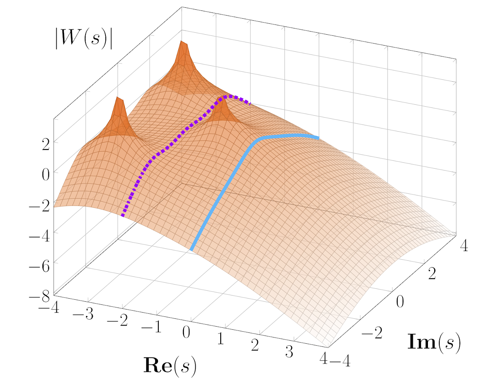

Research
Robust dominance theory
|  | Robustness is a classical concept in control engineering. A behavior is robust if it persists under the effect of exogenous perturbations or parametric uncertainty. Enforcing robust stability of a single equilibrium is nowadays a well-understood task. However, tractable tools to design robust non-equilibrium behaviors are lacking, despite multistability and oscillations being pervasive in biology and robotics. Robust dominance theory is an interconnection theory geared towards systems that switch and oscillate. The theory demonstrates that behaviors away from equilibrium can be engineered using familiar frequency domain and convex optimization tools. |
A geometric approach to modelling and approximation
 |
With the rapid advance of computer and communication technologies, mathematical models of dynamical systems are playing an increasingly important role for analysis and design. The need of precision frequently leads to the inclusion of a large number of variables, thus posing a serious obstacle to achieving accurate simulations. Model reduction methods alleviate this issue by constructing simplified models that capture prescribed features of the original system, while system identification methods allow to build these models directly from measured data. Geometric modelling and approximation deal with model reduction and system identification problems using the differential geometric approach to nonlinear systems, which has significantly impacted on both theory and applications in many control problems. |
Collaborators
A. Astolfi - Imperial College London and University of Rome “Tor Vergata”
G. Scarciotti - Imperial College London
R. Sepulchre - University of Cambridge
F. Forni - University of Cambridge